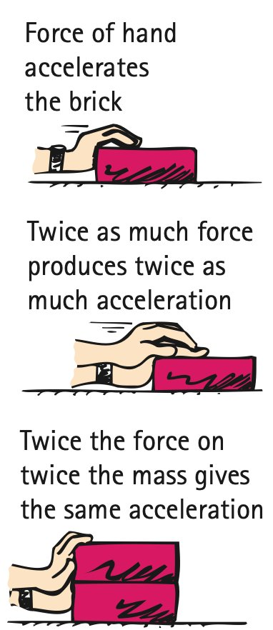

Force and Acceleration
Mathematical idea: Newton’s Second Law connects three quantities: net force, mass, and acceleration.
You will use textbook force-and-mass comparisons to see how changing the cause changes the acceleration, then apply the relationship to simple calculations.
Learning Target
Students will explain how net force and mass determine acceleration and use Newton’s Second Law to analyze changes in motion.
I can statements
- I can explain that force causes acceleration, not just motion.
- I can describe how increasing net force affects acceleration.
- I can describe how increasing mass affects acceleration.
- I can use Newton’s Second Law to calculate force, mass, or acceleration in simple situations.
- I can explain why acceleration is in the direction of the net force.
Vocabulary
These are words you will see in this section. Do not define them yet.
- force
- net force
- acceleration
- directly proportional
- mass
- inversely proportional
- Newton’s Second Law
Use the preview activity to decide which words you already know, recognize, or do not know yet. Watch for these words in bold when they are first introduced or defined in the reading.
Preview: Skim Before You Read
Directions
Before reading closely, skim the vocabulary list and the section. Look at titles, headings, bold words, pictures, captions, diagrams, tables, and formulas. Do not try to understand everything yet. Your job is to notice what already looks familiar and make predictions about what this section may explain.
Step 1 — Sort the vocabulary. Write each vocabulary word in the column that best matches what you know right now. You may move a word later.
| Know for sure | Recognize | Don’t know yet |
|---|---|---|
Step 2 — Skim the section. Record what catches your attention before you read closely.
| What I noticed | |
|---|---|
| What I predict | |
| What I wonder |
Content: Read, Look, Annotate, Apply
Directions
Read in short chunks. Annotate the prose and the figures together: underline evidence, circle or highlight bold vocabulary, label arrows or measured features, connect a sentence to an image, and write short questions or connections in the margins.
Reading 1: Force Changes Velocity
A force is a push or pull that occurs during an interaction. A force does not simply mean that an object is moving. In the textbook hockey-puck example, the puck can continue at constant velocity after the stick is no longer pushing it. What the unbalanced push does is produce acceleration—a change in velocity.
Acceleration may mean speeding up, slowing down, or changing direction. A force applied in the same direction as motion can increase speed; a force opposite motion can decrease speed; a sideways force can turn the velocity. The key question is not “Is it moving?” but “Is its velocity changing?”

Image read: Mark where the interaction occurs. Draw a small arrow showing the direction you expect the ball’s acceleration to point during the kick.
Usually several forces act at once. Their combined effect is the net force. Newton’s description of motion depends on this combined force, not on one force considered by itself. If forces balance, net force is zero and acceleration is zero even if the object is already moving.
Stop and Discuss
- What evidence in the reading separates “having motion” from “having acceleration”?
- If an object moves east while the net force points north, which direction does its acceleration point? Explain without claiming what its full path must be.
Example 1: Direction of acceleration
A hockey puck is moving east across nearly frictionless ice. A stick briefly pushes the puck north.
- Identify the direction of the net force during contact.
- State the direction of acceleration and explain how it is related to the net force.
You Try It 1: Balanced or unbalanced?
A cart rolls right while two horizontal forces act: 12 N right and 20 N left.
- Find the horizontal net force, including direction.
- Predict the direction of acceleration. Does this information alone tell you the cart’s current direction of motion? Explain.
Reading 2: More Net Force, More Acceleration
For the same object, increasing net force produces a larger acceleration. The textbook describes acceleration as directly proportional to net force: if the net force doubles while mass stays fixed, acceleration doubles; if the net force triples, acceleration triples.

Image read: Compare the left-side cases. Circle what stays the same and annotate how the force and acceleration change together.
Newton’s Second Law organizes this relationship quantitatively. It says that acceleration is directly proportional to net force, inversely proportional to mass, and points in the direction of the net force. With consistent units, the relationship can be written as an equation.
This is a cause-and-effect model: net force and mass determine acceleration. The formula does not replace the earlier definition of acceleration as change in velocity over time; instead, it tells what produces that change.
Stop and Discuss
- Use the source image to explain what “directly proportional” means.
- Why can a jet move at high constant velocity while having zero acceleration and zero net force?
Equivalent form for acceleration:
$$a=\frac{F_{net}}{m}$$$F_{net}$ is net force in newtons (N), $m$ is mass in kilograms (kg), and $a$ is acceleration in meters per second squared (m/s²).
Example 2: Find acceleration
A 6-kg cart experiences a net horizontal force of 24 N to the right.
- Calculate the cart’s acceleration.
- State the direction of acceleration and connect it to the net-force direction.
You Try It 2: Find net force
An 8-kg sled accelerates at 3 m/s² east.
- Use Newton’s Second Law to calculate the net force.
- What direction must the net force point?
Reading 3: Mass Resists Acceleration
An object’s mass measures inertia—the resistance it has to changes in motion. The same net force produces a smaller acceleration on a larger mass because more resistance to acceleration must be overcome.

Image read: Compare the right-side cases. Label the force as “same,” then write how doubling mass changes acceleration.
For a fixed net force, acceleration is inversely proportional to mass. Doubling mass cuts acceleration in half; tripling mass makes acceleration one-third as large. This is the second half of the pattern shown by Newton’s Second Law.
The direction rule still matters. Changing mass changes how much acceleration occurs, but it does not change the fact that acceleration points with the net force. A heavier object does not “ignore” a force; it responds with less acceleration for the same net force.
Stop and Discuss
- What stays the same and what changes in the mass-comparison image?
- Explain why two objects can experience the same net force but have different accelerations.
When net force and acceleration are known, Newton’s Second Law can be rearranged:
$$m=\frac{F_{net}}{a}$$Before calculating, predict whether a larger mass should require more or less net force to produce the same acceleration.
Example 3: Same force, different masses
Cart A has mass 3 kg and Cart B has mass 9 kg. Each experiences the same 18-N net force to the right.
- Calculate each acceleration.
- Explain the pattern using mass and Newton’s Second Law.
You Try It 3: Find the mass
An object accelerates at 5 m/s² when a 30-N net force acts on it.
- Calculate the object’s mass.
- Explain why an object with twice this mass would have less acceleration if the same 30-N net force acted.
Vocabulary: Define the Terms
You have now seen these words in the reading, images, and practice. Use this table to consolidate the physics meaning of each term.
| Vocabulary term | Definition |
|---|---|
| force | A push or pull that is part of an interaction and can change an object’s motion. |
| net force | The combined vector effect of all forces acting on an object. |
| acceleration | A change in velocity; it can be a change in speed, direction, or both. |
| directly proportional | A relationship in which two quantities change by the same factor in the same direction. |
| mass | A measure of an object’s inertia, or resistance to acceleration. |
| inversely proportional | A relationship in which increasing one quantity decreases the other by the corresponding factor. |
| Newton’s Second Law | The rule that acceleration depends directly on net force, inversely on mass, and points in the direction of the net force. |
Summary
- A net force causes acceleration; motion by itself does not require a net force.
- Acceleration points in the direction of the net force.
- For constant mass, acceleration is directly proportional to net force.
- For constant net force, acceleration is inversely proportional to mass.
- $F_{net}=ma$, $a=\frac{F_{net}}{m}$, and $m=\frac{F_{net}}{a}$ express the same Second Law relationship.
Common Mistakes
| Mistake | Why it is tempting | Check instead |
|---|---|---|
| A moving object must have a forward net force. | Everyday friction makes this seem true. | Constant velocity means zero acceleration and therefore zero net force. |
| Using one force instead of net force. | A visible applied force feels like the whole story. | Combine all forces with direction before using the Second Law. |
| More mass means more acceleration. | Heavier objects may be associated with larger forces. | For the same net force, greater mass means smaller acceleration. |
| Acceleration always points with velocity. | Speeding-up examples often have them aligned. | Acceleration points with net force; velocity may point elsewhere. |
What does Newton’s Second Law say about the direction of acceleration relative to net force?
Two carts experience the same 16-N net force. One has twice the mass of the other. Compare their accelerations and explain your reasoning.
What is one thing you learned in this section? Explain it in at least one complete sentence.
What is one thing from this section you still need to understand or practice more? Be specific.